Important Discrete RVs
Contents
8.4. Important Discrete RVs#
There are several types of discrete random variables that commonly arise in statistics and engineering applications. We review the most common ones below. We also show how to use the scipy.stats module to generate these random variables and work with the various functions that characterize the probability of these random variables. SciPy provides implementations of more than 80 common types of random variables, including 19 types of discrete random variables (as of SciPy 1.7.3). To prepare for our use of scipy.stats we will import it as stats:
import scipy.stats as stats
We will also use NumPy to create various input ranges and Matplotlib to visualize various functions:
import matplotlib.pyplot as plt
import numpy as np
%matplotlib inline
8.4.1. Discrete Uniform Random Variable#
In much of our previous work on probability we have considered fair experiments, where the experiment has a finite set of outcomes, all of which are equally likely. Here we extend this idea to a random variable:
DEFINITION
- discrete uniform random variable#
A random variable that has a finite number of values in its range and for which all of its values have the same probability.
For example, if we roll a fair die and let \(X\) be the number on the top face, then \(X\) is a discrete uniform random variable with
We can create a discrete uniform random variable in scipy.stats using stats.randint():
?stats.randint
That help is long and complete, and it will be up-to-date with the latest version of scipy.stats. However, it is much more practical to refer to the web page scipy.stats.randint. I have included an image of the most important part below:
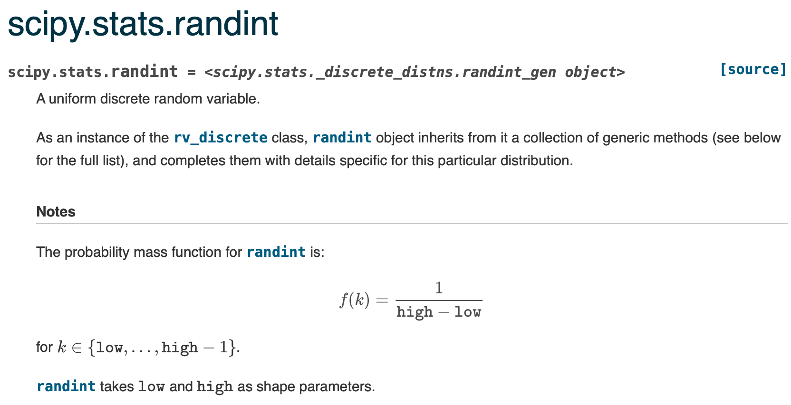
We specify the values that the random variable will take on by specifying low and high values. As in most Python functions, the actual values that the random variable will take on will not include high; the actual highest value is high - 1.
Now let’s see how to create and work with the discrete uniform distribution in Python.
We will use an object-oriented (OO) approach in working with distributions in scipy.stats; however, you will not need to have any background in OO programming to understand this. Basically, we will create an object with the desired distribution by calling the specified scipy.stats random variable type with the desired distribution parameters as the argument, and we will assign the output to a variable.
So, to create a random variable that represents the value on the top face when rolling a fair 6-sided die. It is convention to use \(U\) for such a random variable if that does not conflict with other random variables’ names. In Python, we can create an object to model this random variable like:
U = stats.randint(1, 7)
Alternatively, we can pass low and high as keyword parameters if we want to be more explicit:
U = stats.randint(low=1, high=7)
U is an object, and it has methods to work with the discrete uniform random variable with the given parameters. Methods are just like functions, except that they belong to an object, and their behavior is affected by the internal attributes (i.e., properties) of the object.
For instance, when we created U, we set its attributes were set to generate a values from 1 to 6 (inclusive). You can use Python’s help function to see the methods of U:
help(U)
Help on rv_frozen in module scipy.stats._distn_infrastructure object:
class rv_frozen(builtins.object)
| rv_frozen(dist, *args, **kwds)
|
| # Frozen RV class
|
| Methods defined here:
|
| __init__(self, dist, *args, **kwds)
| Initialize self. See help(type(self)) for accurate signature.
|
| cdf(self, x)
|
| entropy(self)
|
| expect(self, func=None, lb=None, ub=None, conditional=False, **kwds)
|
| interval(self, alpha)
|
| isf(self, q)
|
| logcdf(self, x)
|
| logpdf(self, x)
|
| logpmf(self, k)
|
| logsf(self, x)
|
| mean(self)
|
| median(self)
|
| moment(self, n)
|
| pdf(self, x)
|
| pmf(self, k)
|
| ppf(self, q)
|
| rvs(self, size=None, random_state=None)
|
| sf(self, x)
|
| stats(self, moments='mv')
|
| std(self)
|
| support(self)
|
| var(self)
|
| ----------------------------------------------------------------------
| Data descriptors defined here:
|
| __dict__
| dictionary for instance variables (if defined)
|
| __weakref__
| list of weak references to the object (if defined)
|
| random_state
A few of these should look familiar: pmf, cdf, and sf refer to the same functions that we abbreviated in Discrete Random Variables and Cumulative Distribution Functions: the probability mass function, cumulative distribution function, and survival function, respectively. Each of the methods can be called by adding it to the object name after a period, followed by parentheses. Any parameters or values for the method should be given in the parentheses.
We can get the interval containing the range of a random variable in scipy.stats using the support method:
U.support()
(1, 6)
Warning
Note that support returns the lowest value in the range and the highest value in the range, so be careful in using this method. If these values were used as arguments to create a new stats.randint object, that object would have a different range!
We can evaluate the PMF at any value:
U.pmf(3)
0.16666666666666666
Note that these methods can also take lists or vectors as their arguments:
uvals = np.arange(1, 7)
U.pmf(uvals)
array([0.16666667, 0.16666667, 0.16666667, 0.16666667, 0.16666667,
0.16666667])
Let’s plot the PMF for this random variable:
plt.stem(uvals, U.pmf(uvals), use_line_collection=True)
plt.xlabel("u")
plt.ylabel("Probability mass function $P_U(u)$");
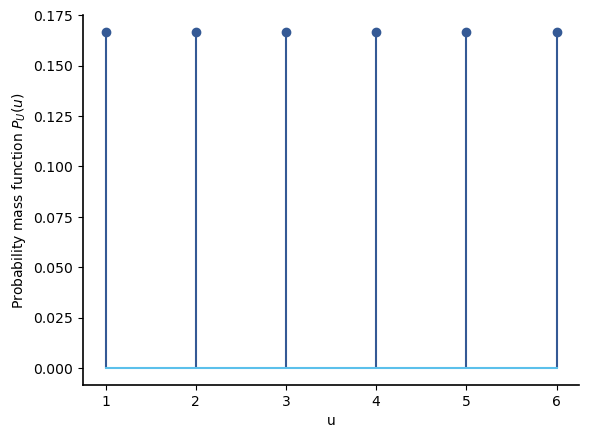
We can use the rvs method to draw random values from this random variable. The argument is the number of random values to generate:
num_sims = 10_000
u = U.rvs(num_sims)
print(u[:20])
[4 5 5 6 5 1 1 1 1 5 4 1 4 5 3 1 1 4 2 6]
Let’s use plt.hist to see if the relative frequencies are approximately equal:
plt.hist(u)
(array([1663., 0., 1713., 0., 1657., 0., 1720., 0., 1635.,
1612.]),
array([1. , 1.5, 2. , 2.5, 3. , 3.5, 4. , 4.5, 5. , 5.5, 6. ]),
<BarContainer object of 10 artists>)
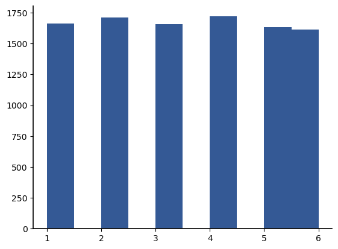
The look to have equal counts but have a strange spacing. That is because plt.hist() by default has 10 bins, whereas the data only takes on 6 values. We will get much better results if we specify the bins. For discrete random variables with a contiguous set of integer values, specifying the number of bins may work out:
counts, mybins, patches = plt.hist(u, bins=6)
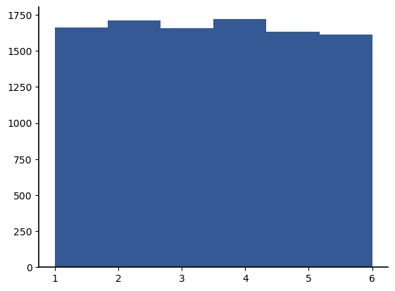
However, look at the set of bin edges returned:
print(mybins)
[1. 1.83333333 2.66666667 3.5 4.33333333 5.16666667
6. ]
In general, it is safest to specify the exact bin edges to use. But again, we must be careful in dealing with the upper value, and this time doubly so. When providing a list of bin edges, they plt.hist interprets them as follows:
**bins** : *array*
The edges of the bins. Length nbins + 1 (nbins left edges and right edge of last bin).
For the last bin, we need to provide the value 6 as the left edge, and we need to provide another higher value (say, 7) as the right edge. Since a range or np.arange does not include its last value, we will need to specify a value 1 higher than 7:
newbins = range(1, 8)
list(newbins)
[1, 2, 3, 4, 5, 6, 7]
plt.hist(u, bins=newbins)
(array([1663., 1713., 1657., 1720., 1635., 1612.]),
array([1, 2, 3, 4, 5, 6, 7]),
<BarContainer object of 6 artists>)
When working with discrete random variables, we can get the relative frequencies from plt.hist() by passing the density=True keyword argument, provided the random variable is defined on the integers and bins of length 1 are used.
plt.hist(u, bins=newbins, density=True)
plt.xlabel("$u$")
plt.ylabel("$P_U(u)$");
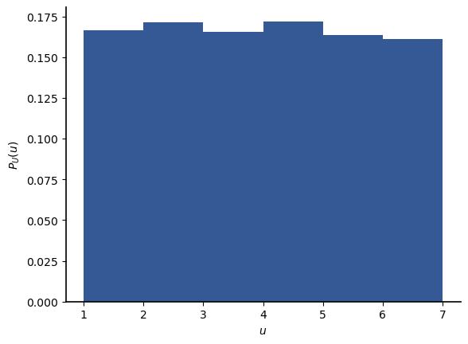
As expected, the relative frequencies match the PMF values closely.
Next, we plot the CDF. Since the CDF takes on nonzero values in between the values the random variable takes on, we will plot it for a finer mesh of \(u\) values:
uvals2 = np.linspace(0, 6, 61)
plt.step(uvals2, U.cdf(uvals2), where="post")
plt.xlabel("$u$")
plt.ylabel("$F_U(u)$");
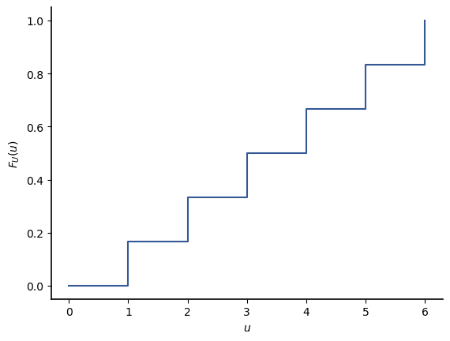
Finally, let’s compare the cumulative histogram (with both cumulative = True and density = True) to the CDF:
uvals2 = np.linspace(0, 6, 61)
plt.step(uvals2, U.cdf(uvals2), where="post")
plt.hist(u, cumulative=True, density=True, bins=newbins)
plt.xlabel("$u$")
plt.ylabel("$F_U(u)$");
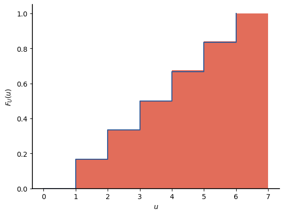
Exercise: What happens if we plot the cumulative histogram without specifying the bins? Why do you think that happens?
8.4.2. Bernoulli Random Variable#
The Bernoulli random variable is another of the simplest of the discrete random variables, and it is the simplest random variable that can take on unequal probabilities. We give an informal definition:
DEFINITION
- Bernoulli random variable#
A Bernoulli random variable \(B\) takes on value of 0 or 1. It is specified by a parameter \(p\) such that \(P(B=1) = p\) and \(P(B=0) = 1-p\).
Formally, we can define the Bernoulli random variable as follows:
Let \((S, \mathcal{F}, P)\) be a probability space. Let \(A \in \mathcal{F}\) be an event and define \(p=P(A)\); for instance, \(A\) may be an event corresponding to a “success”. Then define the Bernoulli random variable \(B\) by
The PMF for a Bernoulli RV \(B\) is
We have already given examples of two binary random variables in Examples 1 and 2 in Discrete Random Variables. There are many other phenomena that may be modeled as Bernoulli random variables. Some engineering examples include:
whether a bit is 0 or 1
whether a bit is in error in a communication system
whether a component of a system has failed
whether a sensor detects some phenomena.
Note
DISTRIBUTIONS OF RANDOM VARIABLES
We introduce a definition and some notation to facilitate discussing random variables of common types.
DEFINITION
- distribution (of a random variable)#
The distribution of a random variable is a characterization of how the random variable maps sets of values to probabilities. For instance, the distribution may refer to a particular type of random variable along with whatever parameter(s) are required to completely specify the probabilities for that type of random variable.
When the distribution refers to a particular type of random variable, we write either that a random variable has that distribution or that the random variable is distributed according to that type. For example, if \(X\) is a Bernoulli random variable with \(p=P(X=1)\), then we say that \(X\) has a Bernoulli(\(p\)) distribution or that \(X\) is distributed Bernoulli(\(p\)). Both of these statements have the same meaning, and we will denote this in shorthand notation as $\( X \sim \mbox{Bernoulli} (p). \)$
We now show how to work with the Bernoulli random variable using scipy.stats. First, review the help page for stats.bernoulli:
?stats.bernoulli
For instance, to create a Bernoulli random variable \(B_1\) with probability \(P(B_1 = 1) = 0.2\), we will use the following Python code:
B1 = stats.bernoulli(0.2)
B1 is now an object that represents a Bernoulli random variable with parameter \(p=0.2\).
help(B1)
Let’s inspect and then plot the PMF values:
b = np.arange(-1, 3)
B1.pmf(b)
array([0. , 0.8, 0.2, 0. ])
plt.stem(b, B1.pmf(b), use_line_collection=True)
plt.xlim(-0.5, 1.5);
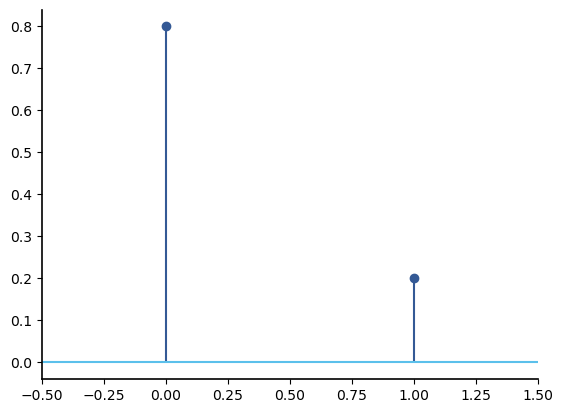
The CDF also works as expected:
x = np.linspace(-1, 2, 101)
plt.step(x, B1.cdf(x), where="post");
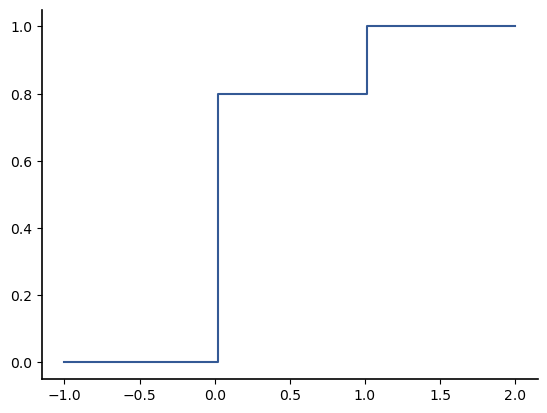
Each scipy.stats random variables also has the ability to draw random values from the specified distribution (i.e., to get values of the random variable). The method to do this is called rvs. If it is called with no argument, then it generates a single value of that random variable:
B1.rvs()
0
More commonly, we pass the number of random values we want to generate as an argument:
B1.rvs(10)
array([1, 0, 0, 0, 0, 0, 0, 0, 0, 0])
Lets simulate 100_000 values of the Bernoulli(0.2) random variable and plot a histogram of the values. We will also capture the output counts to compare the relative frequencies with the true values:
num_sims = 100_000
b = B1.rvs(num_sims)
mybins = [0, 1, 2]
counts, mybins, patches = plt.hist(b, bins=mybins)
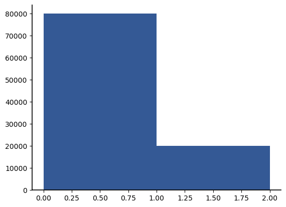
Then the relative frequencies are:
print(f"The relative freqs are {counts/num_sims}")
plt.bar([0, 1], counts / num_sims, alpha=0.5)
plt.stem([0, 1], B1.pmf([0, 1]), linefmt="orange", use_line_collection=True)
The relative freqs are [0.79916 0.20084]
<StemContainer object of 3 artists>
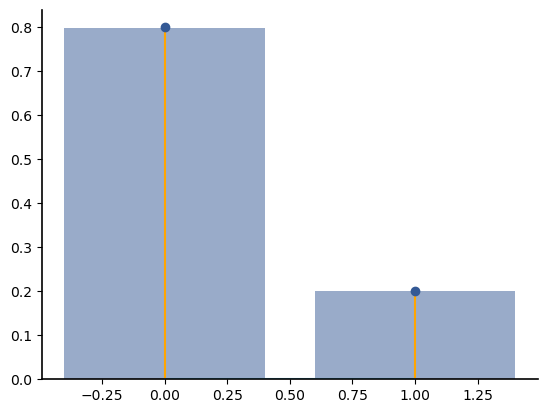
8.4.3. Binomial Random Variable#
One of the next most common types of discrete random variables arises when we have \(N\) repeated, independent Bernoulli trials with identical probability of success \(p\). Let \(B_2\) be the number of successes. Then \(B_2\) is a Binomial\((N,p)\) random variable. For example, in our very first experiments in Motivating Problem: Is This Coin Fair?, we considered the probability of seeing 6 or fewer heads when a fair coin is tossed 20 times. We can model the number of heads as Binomial(20, 0.5) random variable.
Note that we can also think of a Binomial\((n,p)\) random variable as the sum of \(n\) independent Bernoulli\((p)\) random variables.
In shorthand notation, we will write
The PMF for a Binomial random variable is easily derived:
For \(N\) trials with probability of success \(p\), the probability of a particular ordering of \(k\) successes is \(p^k(1-p)^{N-k}\).
The number of different orderings of \(k\) successes and \(N-k\) failures in \(N\) total trials is
Thus the probability of getting \(k\) successes on \(N\) independent Bernoulli(\(p\)) trials is
Here, the variable \(k\) was used instead of \(b\) because \(k\) is used widely in practice to represent a number of successes for a Binomial random variable.
We summarize our definition of the Binomial random variable below:
DEFINITION
- Binomial random variable#
A binomial random variable \(B_2\) represents the number of successes on \(N\) independent Bernoulli trials, each of which has probability of success \(p\). The probability mass function for the Binomial random variable is
(8.5)#\[\begin{equation} p_{B_2}(k) = \begin{cases} \binom{N}{k} p^k (1-p)^{N-k}, & k=0,1,\dots,N \\ 0, & \mbox{o.w.} \end{cases} \end{equation}\]
Some engineering examples include:
the number of bits in error in a packet
the number of defective items in a manufacturing run
A binomial random variable can be created in scipy.stats using stats.binom. The number of trials and probability of success must be passed as the arguments:
B2 = stats.binom(10, 0.2)
k = range(0, 11)
plt.stem(k, B2.pmf(k), use_line_collection=True);
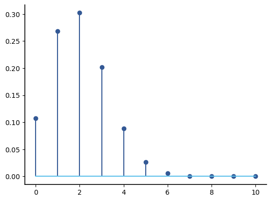
Intuitively, if \(p\) is small (such as \(p=0.2\) in the example above), then most of the probability mass will be around the small values of the random variable. Moreover, most people have the sense that if we conduct \(N\) trials with probability \(p\), then the most likely outcomes will be around \(Np\). We see that this is true for our example of \(N=10\) and \(p=0.2\) – the value with the highest probability is \(Np=2\). If we increase \(p\) to 0.6, we get the following pmf:
B3 = stats.binom(10, 0.6)
plt.stem(k, B3.pmf(k), use_line_collection=True);
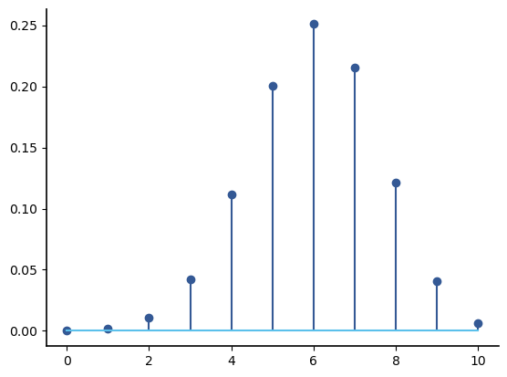
Again, \(Np=6\) is the most common value. Let’s try \(p=0.75\), for which \(NP=7.5\) is not a possible value of the random variable:
B4 = stats.binom(10, 0.75)
plt.stem(k, B4.pmf(k), use_line_collection=True);
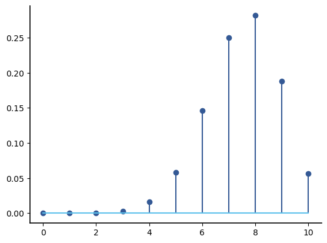
For the Binomial(10, 0.75) random variable, the value with the highest probability is 8, which is close to \(Np=7.5\).
Here is a plot of the CDF for the Binomial(10, 0.75) random variable:
k = np.linspace(0, 12, 1000)
plt.step(k, B4.cdf(k), where="post");
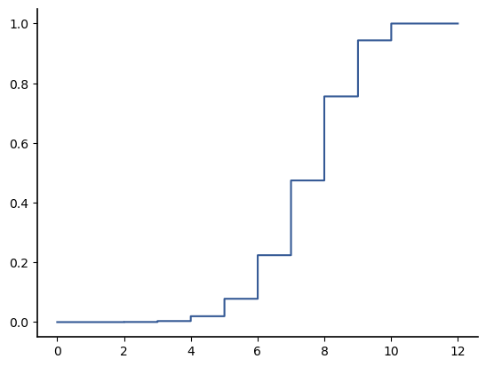
Note that the region where the CDF is increasing quickly is the region where most of the probability is concentrated (since the size of the jumps is equal to the probabilities at the location of the jumps). Finally, we compare a cumulative histogram (with density=True) to the CDF:
b4 = B4.rvs(100_000)
mybins = range(0, 12)
plt.hist(b4, bins=mybins, cumulative=True, density=True, alpha=0.3)
plt.plot(k, B4.cdf(k))
plt.xlim(0, 11);
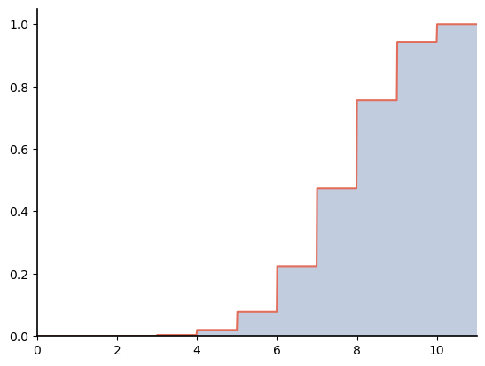
Before we leave the binomial random variable, let’s observe one more behavior. Consider how the PMF looks for a large number of trials:
B5 = stats.binom(1000, 0.2)
b5vals = np.arange(0, 1001)
plt.stem(b5vals, B5.pmf(b5vals), use_line_collection=True)
/Applications/anaconda3/lib/python3.9/site-packages/scipy/stats/_discrete_distns.py:67: RuntimeWarning: divide by zero encountered in _binom_pdf
return _boost._binom_pdf(x, n, p)
<StemContainer object of 3 artists>
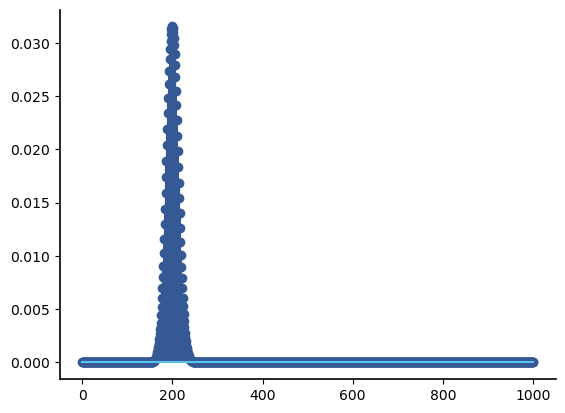
Let’s zoom in to where most of the probability is and use plt.scatter to remove the “stems”:
plt.scatter(b5vals[150:250], B5.pmf(b5vals[150:250]))
<matplotlib.collections.PathCollection at 0x7fcfcc0e7340>
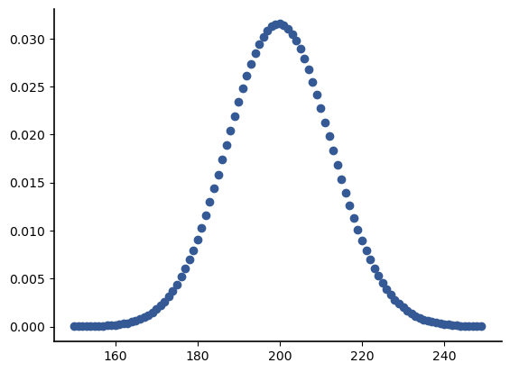
This shape is called a bell shape or bell curve. It plays an important role in probability and statistics, but we do not yet have the tools to explore it in detail yet.
8.4.4. Geometric Random Variable#
DEFINITION
- Geometric random variable#
If independent Bernoulli trials with probability of success \(p\) are conducted until the first success, the number of trials required is a geometric random variable. If \(G\) is a geometric random variable created from Bernoulli trials with probability of success \(p\), we write \(X \sim \text{Geometric}(p)\), and the probability mass function for \(G\) is
\[\begin{align*} p_G(k) = \begin{cases} p(1-p)^{k-1}, & k=1,2,\dots \\ 0, & \text{o.w.}\\ \end{cases} \end{align*}\]
We already encountered such a scenario in Example 5 of Discrete Random Variables, where we flipped a fair coin until the first Heads. The Geometric random variable generalizes that example to handle Bernoulli trials with arbitrary probabilities. Unlike the Binomial, the Geometric random variable does not have a finite range; that is, we cannot specify any particular maximum number of Bernoulli trials that might be required to get the first success. However, since the range is the counting numbers \(1,2,3, \ldots\), it is countable.
It may seem that if the range of a random variable is an infinite set, then it will not be possible to assign a non-zero probability to every outcome. However, the Geometric random variable shows that this is not true. It is possible to assign non-zero probabilities to a discrete random variable with a countable number of outcomes, provided that the probabilities go to zero fast enough.
Note that
so the total probability assigned to all the outcomes sums to 1.
Some examples include:
The number of transmissions required for a packet to be successfully received when transmitted over a noisy channel and retransmitted whenever the received version is corrupted by noise.
An book publisher is promoting a book on the foundations of data science at a conference. The attendees use Python, R, or SPSS for computational data analysis. The number of people that the publisher must talk to before finding one that uses Python for data analysis is a geometric random variable.
A geometric random variable can be created in scipy.stats as stats.geom(), where the argument is the probability of success for the Bernoulli trials. See the help for a list of methods, which are similar to those available for the other discrete random variables that we have introduced:
?stats.geom
G = stats.geom(0.2)
g = G.rvs(100000)
plt.scatter(range(len(g)), g);
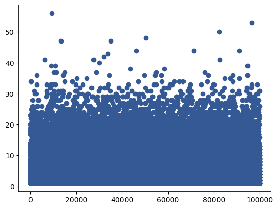
vals = range(20)
plt.hist(g, bins=vals, density=True, alpha=0.5)
plt.stem(vals, G.pmf(vals), use_line_collection=True);
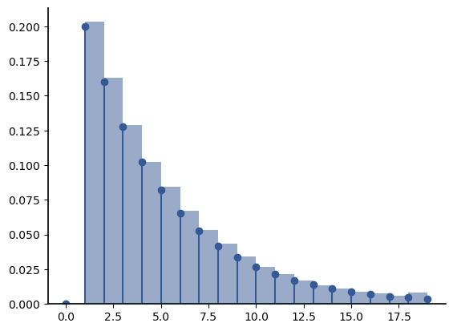
g = G.rvs(100000)
vals = range(20)
plt.hist(g, bins=vals, density=True, alpha=0.5, cumulative=True)
plt.step(vals, G.cdf(vals), where="post");
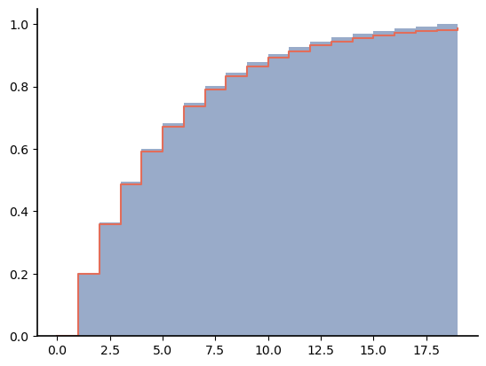
Rather than derive the cdf for a geometric random variable mathematically, we will determine it from a simple argument that is easy to remember. Consider instead the probability \(P(G>k)\), which is the value of the survival function for \(G\) with argument \(k\). If \(G>g\), more than \(g\) trials are required because there have been no successes in the first \(g\) trials. Thus, we can calculate \(P(G>g)\) as
Then the CDF for \(G\) is
plt.plot(vals, G.cdf(vals))
plt.plot(vals, 1 - np.power((1 - 0.2), vals))
plt.xlabel("$k$")
plt.ylabel("CDF of geometric RV, $G(k)$")
Text(0, 0.5, 'CDF of geometric RV, $G(k)$')
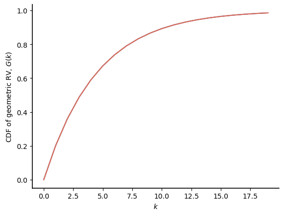
8.4.5. Poisson Random Variable#
First things first – Poisson is French and roughly pronounced “pwah - sahn”. It is named after the French mathematician Siméon Denis Poisson (Wikipedia article on Siméon Denis Poisson).
Before explaining the Poisson random variable, we begin with a story told by the famous Swiss psychiatrist Carl Jung in “Synchronicity: An Acausal Connecting Principle” about observations he made starting at lunch on April 1, 1949:
We have fish for lunch. Somebody happens to mention the custom of making an “April fish” of someone. That same morning I made a note of an inscription which read: “Est homo totus medius piscis ab imo.” [Rough translation: It is man from the middle, fish from the bottom.] In the afternoon a former patient of mine, whom I had not seen for months, showed me some extremely impressive pictures of fish which she had painted in the meantime. In the evening I was shown a piece of embroidery with fish-like sea-monsters in it. On the morning of April 2 another patient, whom I had not seen for many years, told me a dream in which she stood on the shore of a lake and saw a large fish that swam straight towards her and landed at her feet. I was at this time engaged on a study of the fish symbol in history.
Seeing six fish in a 24-hour period seemed unusual. However, he recognizes that this must be assumed as a “meaningful coincidence” unless there is proof “that their incidence exceeds the limits of probability.”
Now, you should be asking: what does this have to do with the Poisson random variable:
The Poisson random variable can help us answer questions like “What is the probability of seeing six fish in 24 hours?” and can be combined with other random variables to answer a question like “What is the probably of seeing six fish in 24 hours at least sometime in a 20 year period?”
Poisson is French for…
fish!
The Poisson random variable is used to model phenomena that occur randomly over some fixed amount of time or space. For convenience of discussion and because it is the most common application, we will only consider periods of time, but everything we discuss below applies equally well to events that occur at some random rate over space.
A Poisson random variable is the number of occurrences given the average rate at which the phenomena occur and the length of time or area of space being considered. We will use the following notation for parameters associated with a random variable:
\(\lambda\) is the average rate of occurrences over time or space,
\(T\) is a length of time being considered, and
\(\alpha = \lambda T\) is the average number of occurrences over \(T\).
Note that if \(\alpha\) is known, then it is not required to know \(\lambda\) and \(T\) separately.
Given the parameter(s), then we can define a Poisson random variable in terms of its PMF:
DEFINITION
- Poisson random variable#
A random variable \(X\) that models events that occur randomly over time (or space), such that if \(\alpha\) events occur on average in some interval of length \(T\), then the PMF of \(X\) is
\[\begin{equation*} p_X(x) = \begin{cases} \frac{ \alpha^k}{k!} e^{- \alpha}, & k = 0, 1, \ldots \\ 0, & \mbox{o.w.} \end{cases} \end{equation*}\]
Note that the range of a Poisson random variable is from 0 to \(\infty\).
The shape of the Poisson varies depending on its parameter, \(\alpha\). Consider first the PMF for a Poisson random variable with \(\alpha=0.5\):
P1 = stats.poisson(0.5)
p1vals = range(5)
plt.stem(p1vals, P1.pmf(p1vals), use_line_collection=True)
<StemContainer object of 3 artists>
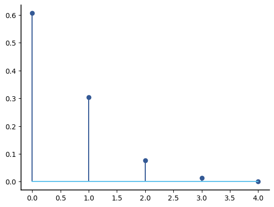
If viewing this book online, use the slider to change the value of alpha and observe the effect on the shape of the PMF.
import ipywidgets as widgets
from ipywidgets import interact
pvals = np.arange(0, 11)
def plot_poisson_pmf(alpha):
plt.clf()
plt.stem(pvals, stats.poisson.pmf(pvals, mu=alpha), use_line_collection=True)
plt.show()
interact(
plot_poisson_pmf,
alpha=widgets.FloatSlider(
min=0.2,
max=5.1,
step=0.2,
value=1,
description="alpha",
style={"description_width": "initial"},
),
)
<function __main__.plot_poisson_pmf(alpha)>
Basically, we can see that there are three different cases:
For \(\alpha < 1\), the PMF is a strictly decreasing function of its argument,
For \(\alpha =1\), then the PMF is a nonincreasing function of its argument: it has the same value at 0 and 1, and then decreases for all larger values,
For \(\alpha >1\), the PMF first increases and then decreases. If \(\alpha\) is an integer, then the PMF has the same value for arguments \(\alpha\) and \(\alpha-1\).
Illustrations of the second two cases are shown below:
vals = range(10)
fig, axes = plt.subplots(1, 2, constrained_layout=True, figsize=(8, 4))
P2 = stats.poisson(1)
axes[0].stem(vals, P2.pmf(vals), use_line_collection=True)
axes[0].set_title("alpha=1")
axes[0].set_xlabel("$k$")
axes[0].set_ylabel("$p_{P2} (k)$")
P3 = stats.poisson(2.5)
axes[1].stem(vals, P3.pmf(vals), use_line_collection=True)
axes[1].set_title("alpha=2.5")
axes[0].set_xlabel("$k$")
axes[0].set_ylabel("$p_{P3} (k)$")
Text(0, 0.5, '$p_{P3} (k)$')
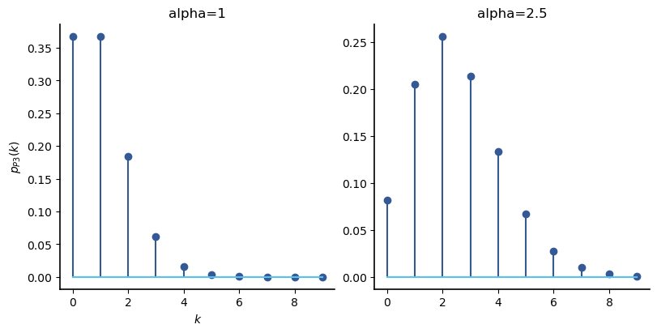
P4 = stats.poisson(100)
p4vals = np.arange(0, 150)
plt.stem(p4vals, P4.pmf(p4vals), use_line_collection=True)
<StemContainer object of 3 artists>
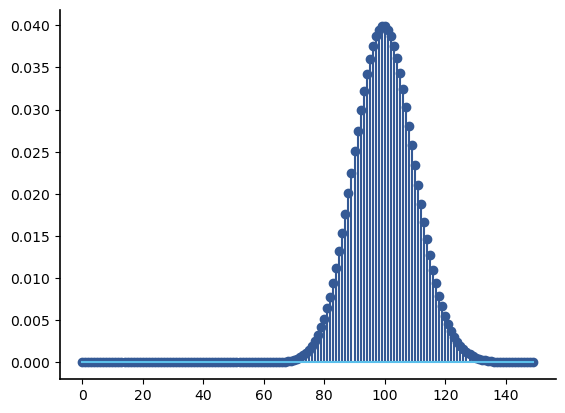
Interestingly, when the average number of occurrences is large, we get another bell shape, just as we saw with the binomial random variable.
Now, let’s see how to apply the Poisson random variable to a practical problem.
Example
In this example, we will show how even minimal information provided in a news article can be used to conduct a statistical test when we can apply a model for the data. In the article Man Bitten in Florida’s ‘Shark Capital of the World’, the town of New Smyrna, Florida is referred to as the “shark capital of the world.”. While mostly focusing on details of a particular shark attack in the beginning of 2022, the article provides the following information about shark bites in the same county in 2021:
According to the International Shark Attack File (ISAF), Volusia county averages nine attacks per year but reported 17 attacks in 2021.
The much higher number of shark attacks than the average could either indicate a concerning trend or could be attributable to the randomness in the number of shark attacks that occur in a given year. How can we tell?
To try to get an answer to this, we have to first acknowledge that the article provides very little data: other than the number of shark attacks in 2021, we are only given the average number of shark attacks per year. With such limited data, we have two choices:
We can introduce a model, by which we mean that we assume that the data comes from a particular distribution that can be completely specified using the available information, or
We can find more detailed data and use that to conduct a statistical test.
Let’s start with the modeling approach. Our previous discussion of fish may make us think of the Poisson distribution, but in general we can ask several questions to determine whether the Poisson is a reasonable model:
Is there a specific maximum value that the data can take on? The answer should be no for the Poisson. For instance, there is no way to upper bound the number of shark bites that might happen in a given year.
Do the individual occurrences occur randomly over time or space and can we specify some rate of occurrence for the given data? The answer should be yes. If the rate is not given, we can usually estimate it from the data. For the shark bite data, shark bites occur at random times.
In this example, we will use approach 1. We assume that the number of shark attacks in Volusia County in a year is Poisson with parameter 9 representing the average number of shark attacks.
Let’s use Scipy.Stats to create a Poisson object with this parameter:
import scipy.stats as stats
S = stats.poisson(9)
Now we will see how to conduct statistical test using this model. We can set up the following null hypothesis significance test:
\(H_0\): the observation comes from the Poisson(9) distribution
\(H_1\): the observation comes from some other distribution
Let’s choose a \(p\)-value threshold of \(0.05\).
As before, we do not usually measure the probability of seeing the exact result observed in the data. Instead, we ask about seeing a result that is at least as extreme as this model. In this case, it makes sense to conduct a one-sided test, where we determine the probability of seeing 17 or more attacks in a year.
Note that \(P(S \ge 17) = P(S> 16)\) allows us to calculate this probability using the survival function:
S.sf(16)
0.011105909377583819
This probability is smaller than 0.05, so we reject \(H_0\) under this test.
However, the article might not have included this information if the result had not seemed significant in the first place. We might instead ask the probability of seeing such an extreme result at least once in a decade. We can model this as a binomial random variable with 10 trials, each of which has probability of “success” \(P(S>16)\). Let’s call this binomial random variable \(S_2\), and we will create a Scipy.Stats object to represent its distribution:
S2 = stats.binom(10, S.sf(16))
Then the probability of having at least one year with 17 or more shark attacks in a decade is \(P(S_2 >0)\), which is
S2.sf(0)
0.105669964152784
Thus there is more than a 10% chance that there is at least one year in a decade with 17 or more shark attacks in Volusia County. Given this, we would not be able to reject the possibility that the 2021 result comes from the Poisson(9) distribution. It may just be attributable to the random nature of the number of shark attacks in a year.
Let’s use this example to work with one more of our distributions. What is the probability that it is more than 10 years before there is another year with 15 or more shark attacks?
We can model the number of years until there is a year with 15 or more shark attacks as a Geometric random variable with probability of “success” \(P(S>14)\). Let \(S_3\) denote this random variable, and we can create a Scipy.Stats object to represent its distribution:
S3 = stats.geom(S.sf(14))
Then the probability that it is more than 10 years before there is another year with 15 more shark attacks is \(P(S_3 > 10)\), which is
S3.sf(10)
0.6547473480899506
There is over an 65% chance that we will not have a year with 15 or more shark attacks in the next decade.
8.5. Arbitrary Discrete RVs#
We can create a discrete random variable with an finite set of integer values using the stats.rv_discrete() method:
?stats.rv_discrete
Note that this method implicitly assumes that the discrete random variable is defined on a subset of the integers.
Let’s use this method to create a random variable based on Example 3 of Discrete Random Variables. Note that we need to pass a tuple that includes:
a list or vector containing the random variable’s range, and
a list or vector containing the probabilities of each point in the random variable’s range.
range1 = [0, 1, 2]
probs1 = [1 / 4, 1 / 2, 1 / 4]
A = stats.rv_discrete(values=(range1, probs1))
Now we can work with the random variable A using the same methods that we used for pre-defined discrete random variables in scipy.stats.
We will use A to demonstrate how to work with such a random variable. If we want to plot the PMF for a random variable created in this way, we can first determine the range of A, using support() method:
A.support()
(0, 2)
If we want to plot the PMF for every value in the support, then we can use np.arange() to create a numpy vector of these values. We will capture the outputs of support() into variables low and high, and we will need to pass high+1 as the second argument to np.arange() because upper values are not included in the created vector:
low, high = A.support()
avals = np.arange(low, high + 1)
print(avals)
[0 1 2]
plt.stem(avals, A.pmf(avals), use_line_collection=True)
plt.xlabel("$a$")
plt.ylabel("Probability mass function $P_A(a)$");
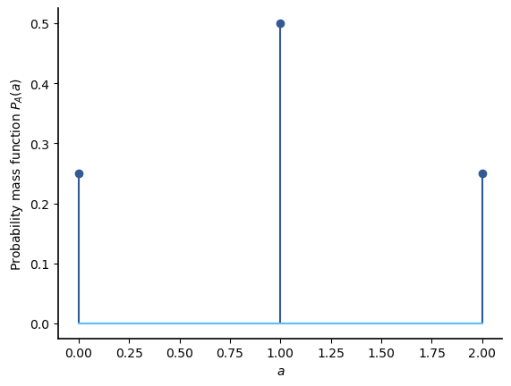
Let’s simulate some random values from this distribution and compute the relative frequencies:
num_sims = 100_000
a = A.rvs(size=num_sims)
avals, counts = np.unique(a, return_counts=True)
plt.bar(avals, counts / num_sims)
plt.grid();
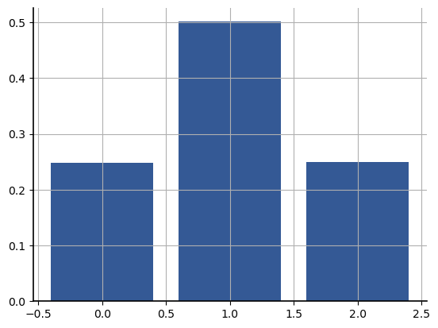
As expected, the relative frequencies closely match the probabilities.
Now, let’s compare the analytical CDF to the empirical CDF generated bh plt.hist():
avals2 = np.linspace(-1, 3, 81)
plt.step(avals2, A.cdf(avals2), "k--", where="post", alpha=0.5)
plt.hist(a, cumulative=True, density=True, bins=[0, 1, 2, 3], alpha=0.25);
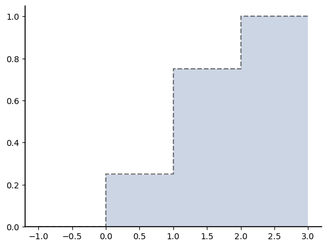
As expected, the theoretical result (the dashed line) matches the empirical histogram (the shaded region) almost exactly.